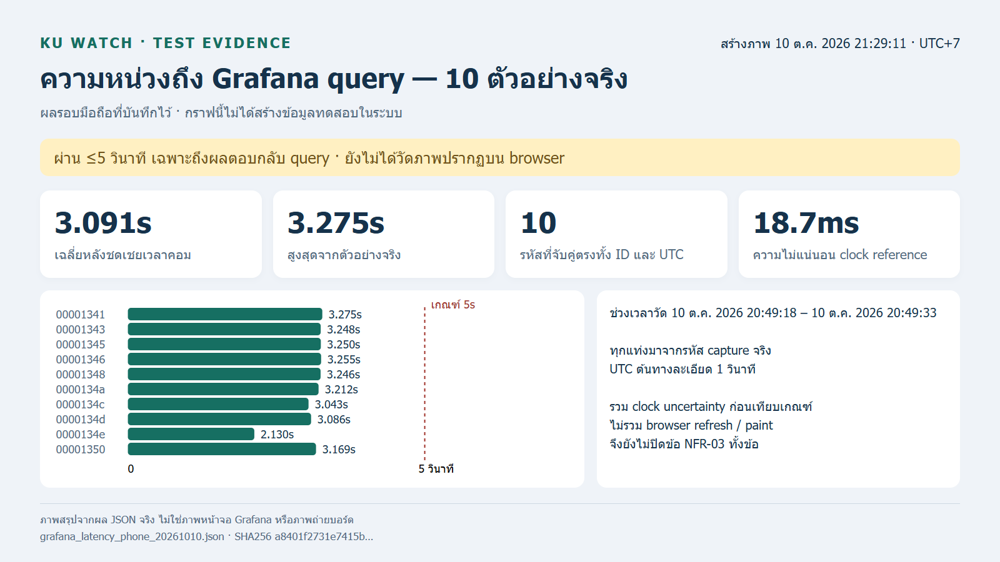
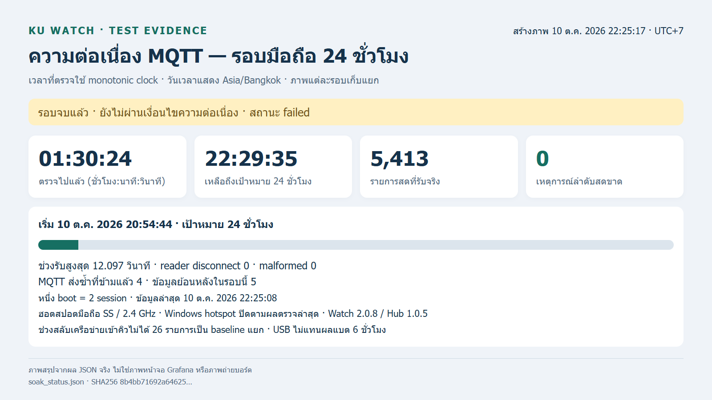
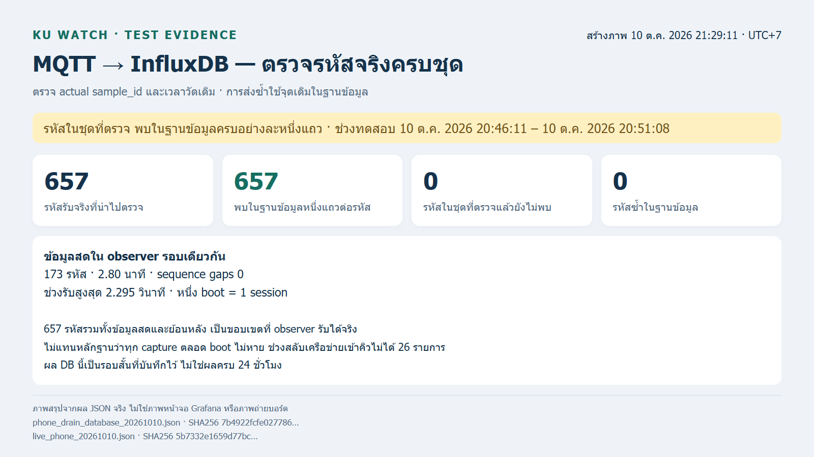
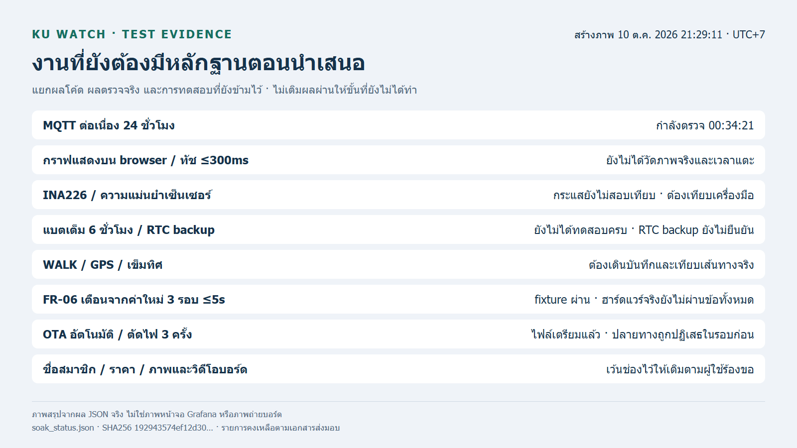

02_query_latency.png
ภาพผลรอบที่บันทึกไว้ ณ 10 ต.ค. 2026 21:29:11 · UTC+7

ภาพสรุปจากผล JSON จริง ไม่ใช่ภาพหน้าจอ Grafana/ภาพบอร์ดจริง รอบที่กำลังตรวจยังไม่ถือว่าผ่าน 24 ชั่วโมง
ตัวเก็บภาพโหมด follow ตั้งทุก 5 นาทีขณะโปรแกรมและคอมทำงาน หยุดเมื่อ audit รอบนี้จบ ไม่เริ่ม audit ใหม่เอง
ไฟล์แต่ละภาพมี JSON ต้นทางและ SHA256 ใน manifest ประกอบ 01_soak.png · 02_query_latency.png · 03_database.png · 04_remaining.png

ภาพผลรอบที่บันทึกไว้ ณ 10 ต.ค. 2026 21:29:11 · UTC+7

ภาพผลรอบที่บันทึกไว้ ณ 10 ต.ค. 2026 21:29:11 · UTC+7

ภาพผลรอบที่บันทึกไว้ ณ 10 ต.ค. 2026 21:29:11 · UTC+7

| เวลาเก็บ (UTC+7) | ตรวจไปแล้ว | รายการสด | สถานะ | หลักฐาน |
|---|---|---|---|---|
| 10 ต.ค. 2026 22:25:17 | 01:30:24 | 5413 | failed / gaps 0 | ภาพ · JSON/hash |
| 10 ต.ค. 2026 22:24:16 | 01:29:24 | 5362 | running / gaps 0 | ภาพ · JSON/hash |
| 10 ต.ค. 2026 22:19:16 | 01:24:23 | 5063 | running / gaps 0 | ภาพ · JSON/hash |
| 10 ต.ค. 2026 22:14:16 | 01:19:23 | 4763 | running / gaps 0 | ภาพ · JSON/hash |
| 10 ต.ค. 2026 22:09:16 | 01:14:23 | 4463 | running / gaps 0 | ภาพ · JSON/hash |
| 10 ต.ค. 2026 22:04:15 | 01:09:23 | 4163 | running / gaps 0 | ภาพ · JSON/hash |
| 10 ต.ค. 2026 21:59:15 | 01:04:22 | 3862 | running / gaps 0 | ภาพ · JSON/hash |
| 10 ต.ค. 2026 21:54:15 | 00:59:22 | 3562 | running / gaps 0 | ภาพ · JSON/hash |
| 10 ต.ค. 2026 21:49:15 | 00:54:22 | 3262 | running / gaps 0 | ภาพ · JSON/hash |
| 10 ต.ค. 2026 21:44:14 | 00:49:22 | 2961 | running / gaps 0 | ภาพ · JSON/hash |
| 10 ต.ค. 2026 21:39:14 | 00:44:22 | 2661 | running / gaps 0 | ภาพ · JSON/hash |
| 10 ต.ค. 2026 21:34:14 | 00:39:21 | 2361 | running / gaps 0 | ภาพ · JSON/hash |
| 10 ต.ค. 2026 21:29:11 | 00:34:21 | 2061 | running / gaps 0 | ภาพ · JSON/hash |
| 10 ต.ค. 2026 21:26:16 | 00:31:31 | 1890 | running / gaps 0 | ภาพ · JSON/hash |
| 10 ต.ค. 2026 21:26:02 | 00:31:11 | 1870 | running / gaps 0 | ภาพ · JSON/hash |
ยังไม่มีภาพ/วิดีโอบอร์ดจริงในโฟลเดอร์ media
เก็บไว้ใน media/ และเติมคำอธิบายวันเวลาใน media/บันทึกภาพจริง.md · โปรแกรมไม่อ้างเวลาแก้ไฟล์ว่าเป็นเวลาถ่าย